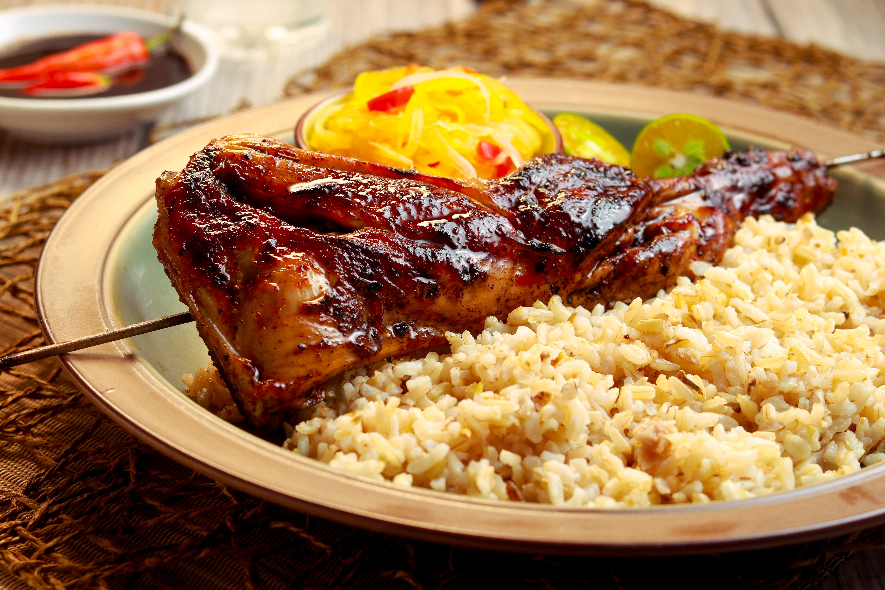

INASAL

Chicken Inasal is a grilled chicken dish and one of the well known Ilonggo dishes.
This is done by marinating chicken pieces in a unique blend of spices and grilling them until done.
Sounds like a simple grilled chicken recipe, isn’t it? Well, it might sound like one;
however, the special marinade and basting sauce makes this Ilonggo version of the grilled chicken extra special.